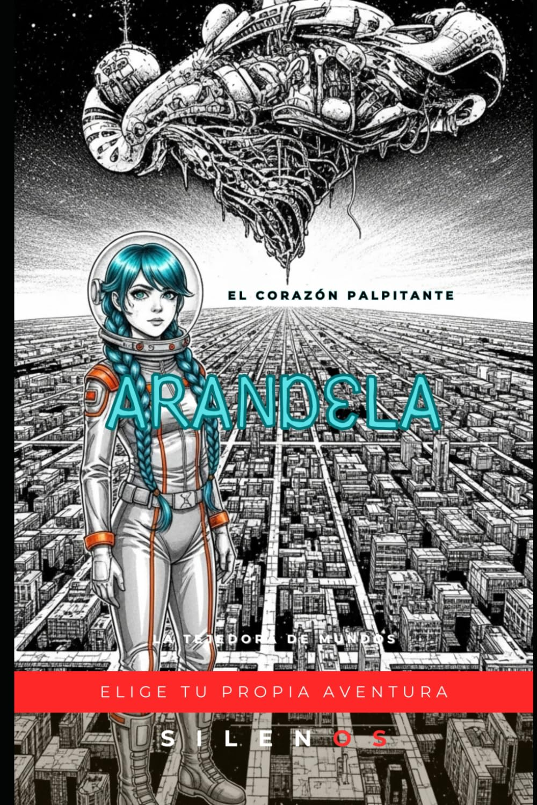

Arandela Colocada
ARANDELA: En El Corazón Palpitante (ELIGE TU PROPIA AVENTURA)
Sinopsis
En las fronteras del biopunk universo de Cryos 4, un planeta de esmeraldas vivientes y tres lunas que vigilan los cielos, nace la aventura de Arandela, una exploradora intrépida que desafía los límites del cosmos a bordo de su singular nave estelar: la Bananonave Blacj. Todo comienza con el enigmático “Primer Destello de Lumina”, una llamarada imposible que emana de El Corazón Palpitante, un pulsar que late en el centro del Sistema Eslabón. Algunos lo llaman señal de socorro, otros profecía estelar. Lo único cierto es que amenaza con desequilibrar la armonía del universo. El viaje llevará a Arandela más allá de las rutas conocidas, atravesando galaxias como el Veridian Nexus y territorios jamás cartografiados, alimentada por el mítico Combustible Ultraespacial. En su búsqueda, se encontrará con los enigmáticos Luminares Astrales, una civilización hecha de pura luz que se comunica a través de Resonancias Lumínicas, y con los enigmáticos Centinelas Lumínicos, guardianes de secretos que podrían redefinir la historia cósmica. Pero aquí es donde tu papel comienza. En cada capítulo, deberás tomar decisiones: ¿Seguirás las Resonancias o desafiarás sus enigmas? ¿Te aliarás con los Centinelas o intentarás forjar tu propio camino? ¿Descubrirás la conexión ancestral entre las esmeraldas de Cryos 4 y la esencia misma de la luz palpitante… o dejarás que el universo se consuma en la oscuridad? En este libro, tu elección dicta el destino. Cada página abre una posibilidad, cada decisión construye un futuro distinto. La aventura de Arandela está escrita en las estrellas, pero solo tú podrás decidir cómo se iluminará el cosmos.